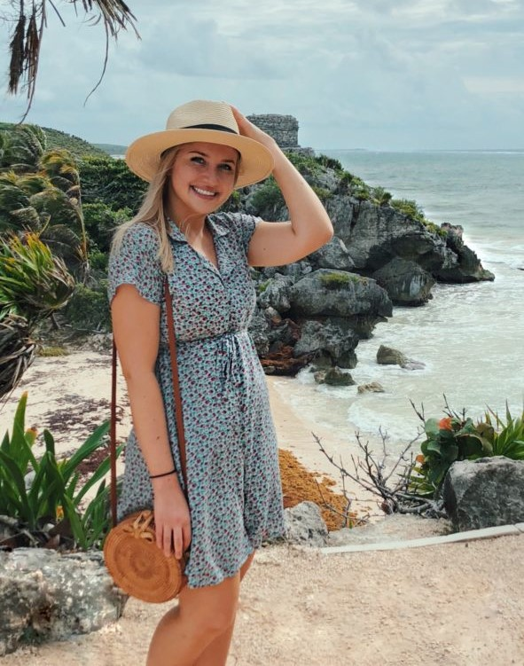
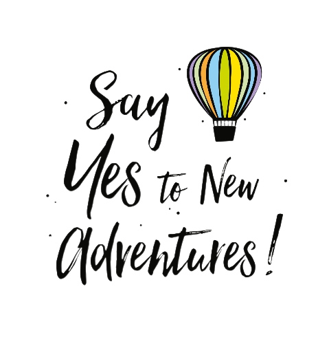
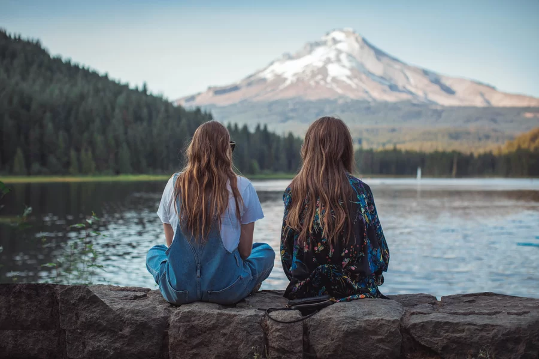
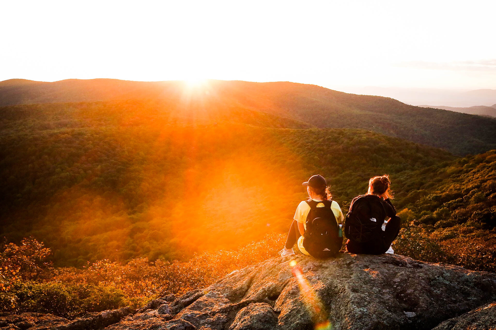
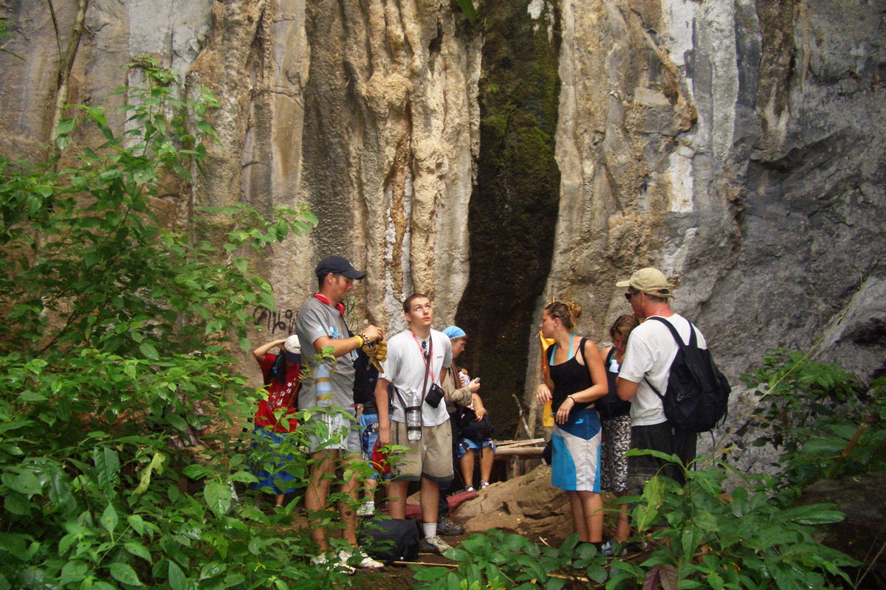
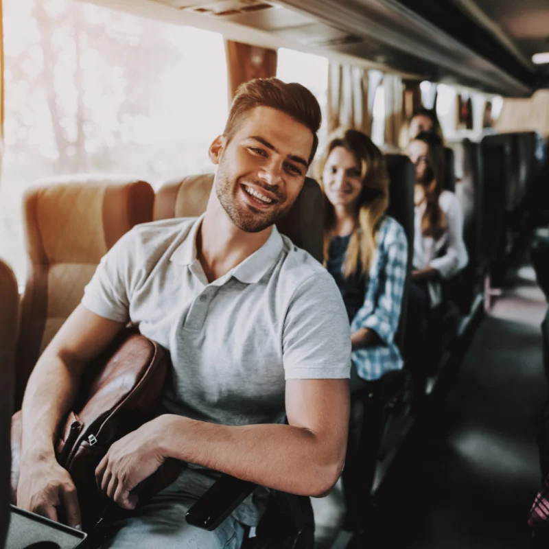
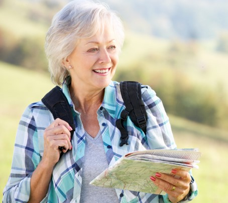
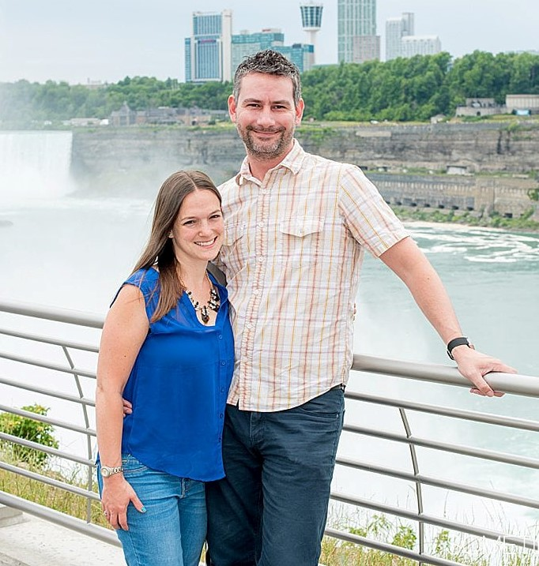

WELCOME HOME, FELLOW TRAVELER!
Hi, we are Alesia and Fjona, two adventurous traveler girls ready to take you on a thrilling journey through our travel blog!
With a shared passion for exploration and a desire to experience the world's diverse cultures, we embarked on a mission
to uncover hidden gems and create unforgettable memories.
Our blog is a reflection of our wanderlust and an invitation for you to join us
on our extraordinary escapades. Through vivid storytelling, captivating photographs, and practical tips, we aim to inspire fellow travelers to step out of their comfort zones and embrace the beauty of our planet.

Fjona
Fjona with her infectious energy and free spirit,
has an innate ability to find beauty in the most
unexpected places.
Her adventurous soul
craves adrenaline-pumping activities like
skydiving, bungee jumping, and hiking rugged
terrains. Fjona's camera lens
captures the
essence of every moment, freezing memories
in time and allowing us to
relive those
breathtaking experiences.
Alesia
Alesia, on the other hand, is a meticulous
planner and a seeker of cultural immersion.
Her love for connecting with local communities
and delving into the traditions and history of
each place we visit is truly inspiring. Alesia's
keen eye for detail ensures that no stone is left
unturned in our quest to truly understand the
heart and soul of every destination.
Have you ever said one of the following:
- “How do I find the money to travel? It seems too expensive for me.”
- “Where do I find the best travel deals?”
- “How do I save money on flights, accommodation, and other big expenses?”
- “How do I plan my trip?”
- “How do I stay safe and healthy?”
- “How do I maximize my time?”
- “I want to travel more, but I don't know the first step.”

You are not alone. Since we started this blog in 2020, we've helped tens of millions of people answer those questions and travel more for less with time-tested and proven tips and advice.
By using this website, you can spend less time searching the Internet and being overwhelmed with information and more time doing the one thing you want to do: TRAVEL.
FROM CONTENT CREATORS TO WORLD TRAVELERS



How did it all begin?
One day, during our lunch break, we stumbled upon a travel magazine that showcased breathtaking destinations
and inspiring travel stories. As we flipped through the pages, an idea sparked between us:"Why not become the
protagonists of our own travel stories?"
Determined to turn our dreams into reality, we started planning weekend getaways to nearby destinations.

A trip to Thailand opened our eyes even more.
There, in the wonderful city of Chiang Mai, we met five backpackers who showed us that we didn't have to be tied down to our job
or be rich to travel. That we could travel long term and on a budget. And that millions of people did it each year.
We wanted in.
We wanted to do what they were doing.
After careful consideration and a leap of faith, we decided to leave our content creation jobs and devote our time and energy
entirely to our travel aspirations.
We've been to over 100 countries and territories, traveled hundreds of thousands of miles around the globe, slept in over a thousand hostels, tried some unique food, made lifelong friends, learned multiple languages, and, most importantly, made it our mission now to help travelers like YOURSELF to realize YOUR travel dreams the same way those five backpackers helped us realize ours.
WHAT YOU'LL LEARN HERE
If you've ever wanted to learn how to travel cheaper, experience a destination's authentic side, and turn your dream trip into a reality, you are in the right place. This website will give you road-tested tips, advice, and suggestions so you can see and do more for less.
On this website, you will find:
- Tested travel tips from years of experience
- A community of supportive travelers to help encourage you to keep going
- Detailed cost breakdowns to help you better budget for your trip
Every day we wake up with one goal in mind: “How can we help other people travel better for less?” The mission here is to be more comprehensive than any other website out there.
Unlike many other travel websites, you won't find sponsored content or paid trips here. Every hostel, restaurant, or attraction has been personally visited by me, my team, or one of my guest columnists.
And we pay our own way.
We sleep in dorms and budget hotels, wait hours for buses, try those roadside street stalls, and test travel passes to see if they really do save you money, get lost in cities, and try to find all the off-beat attractions and cool deals we can. We do it just like you would — because, like you, we're real travelers who just want to explore the world more.
All our recommendations are here because they are useful and used in our day-to-day travels. We recommend what we use.
This website is about showing you what it's really like on the road — not some glossy ad for a travel brand.
So come, read, learn, go sooner, and send a postcard from the road!
WHAT PEOPLE LIKE YOU SAY ABOUT THIS WEBSITE

I started following your blog a year or so ago, and it has since then motivated me to chase my dreams on a level I never thought possible. It was while following your site that I decided to go around the world and film my first documentary. I will be filming in seven different countries over the course of 100 days. I just wanted to say thank you and keep doing what you are doing.
Andrea M

I am a 63-year-old woman who just completed a four-month solo trip to Eastern Europe and the Middle East.
I learned about several discounts I had no idea existed and the best way of traveling in Eastern Europe. The budgeting information was also very useful. Your blog gave me the confidence to travel on my own for an extended period of time.
Kattia

My husband Sam and I have always dreamt of traveling the world, but it seemed so expensive that we thought it would always be just a dream. This blog opened up a whole new world of possibilities for us. We are on a year off to travel with our backpacks. I am currently writing this email you from Quito, after having spent an amazing week in the Galápagos Islands.
Kamila
Thanks for visiting this website, and I look forward to helping you travel more.
Sincerely,
Alesia & Fjona